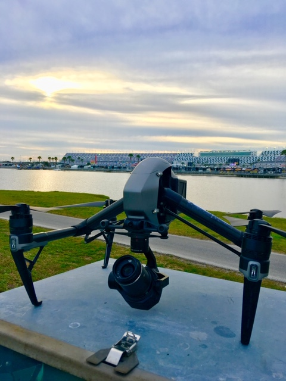
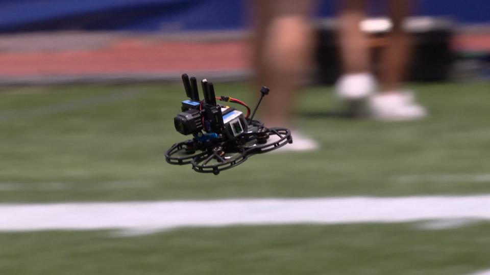

Anyone who has ever been to a live sporting event knows that the experience can be greatly enhanced by getting a birds eye view of the action. Until recently, the only way to get this perspective was to rent a helicopter or blimp, but now there is a much more affordable option: camera drones. These high-tech devices are being used by sports fans and broadcasters alike to get unparalleled views of the action.
One of the biggest problems that camera drones solve is the cost of getting aerial footage of sporting events. In the past, the only way to get this type of footage was to rent a helicopter or blimp, which could cost thousands of dollars. With a camera drone, you can get the same footage for a fraction of the cost.
If you're interested in using a camera drone to get aerial footage of a sporting event, there are a few things you need to know. First, you'll need to get a drone that is equipped with a high-quality camera. There are a number of different models on the market, so do your research to find one that meets your needs. Second, you'll need to get permission from the event organizers to fly your drone. This is usually not a problem, but it's always best to check ahead of time. Finally, when you're ready to fly, make sure you have a clear line of sight to the action and that you're not interfering with any other spectators.
Camera drones are being used by sports fans and broadcasters alike to get unparalleled views of the action. Some of the biggest names in sports have started using drones to get footage of their games, including the NFL, NBA, MLB, and NHL. And it's not just professional sports leagues that are using drones; college and high school athletic programs are using them as well.
When you use a camera drone to get aerial footage of a sporting event, you can expect to get stunning views of the action. Whether you're watching a game from the stands or broadcasting it to the world, camera drones offer a unique perspective that you can't get anywhere else.
The future of camera drones is looking very bright. As the technology continues to improve, we can expect to see even more uses for them, including in news and entertainment. So if you're looking for a new way to experience your favorite sport, be sure to keep an eye on camera drones.
This website uses cookies to ensure you get the best experience on our website. By continuing to use this site, you consent to the use of cookies. For more information, please see our cookie policy.